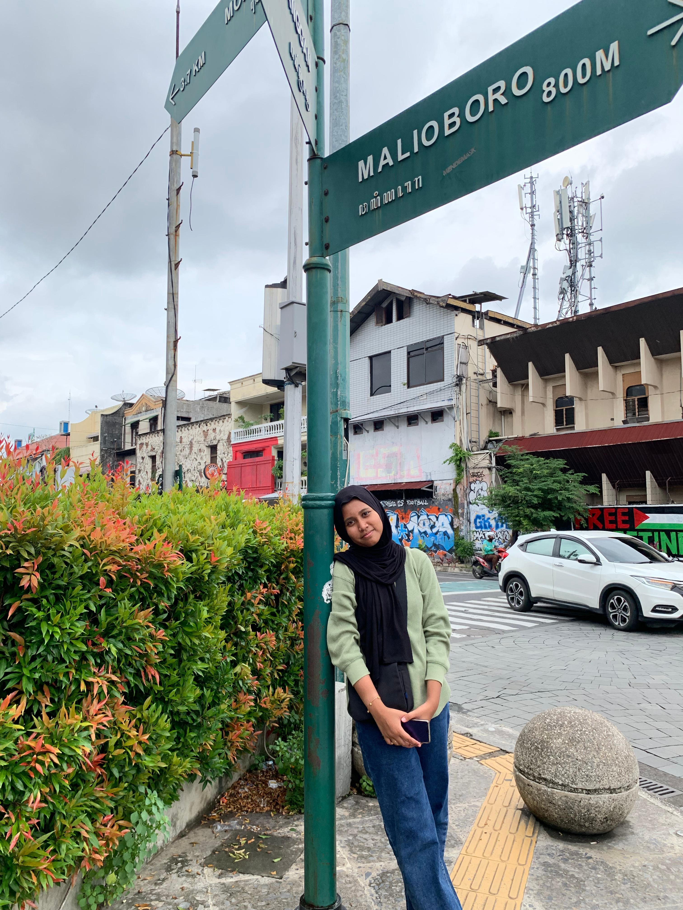
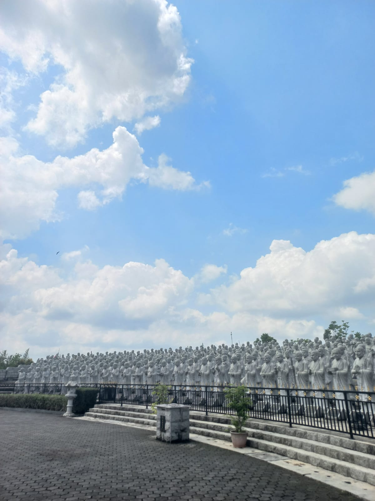
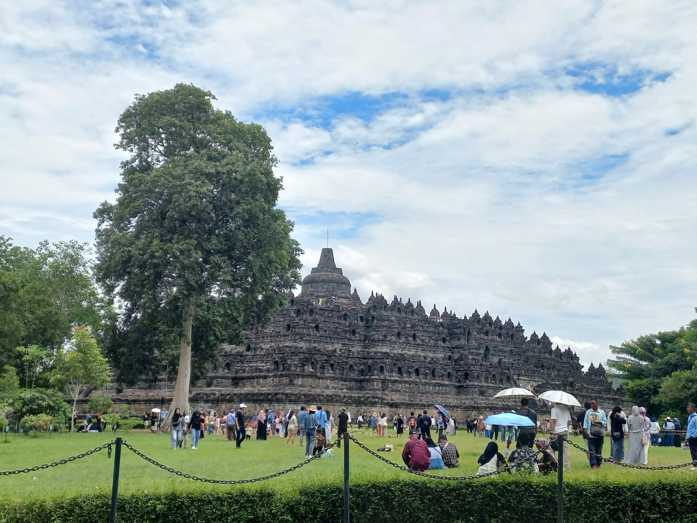
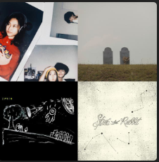
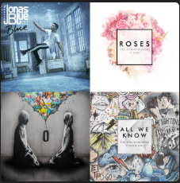
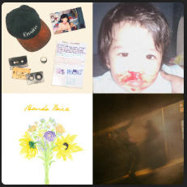
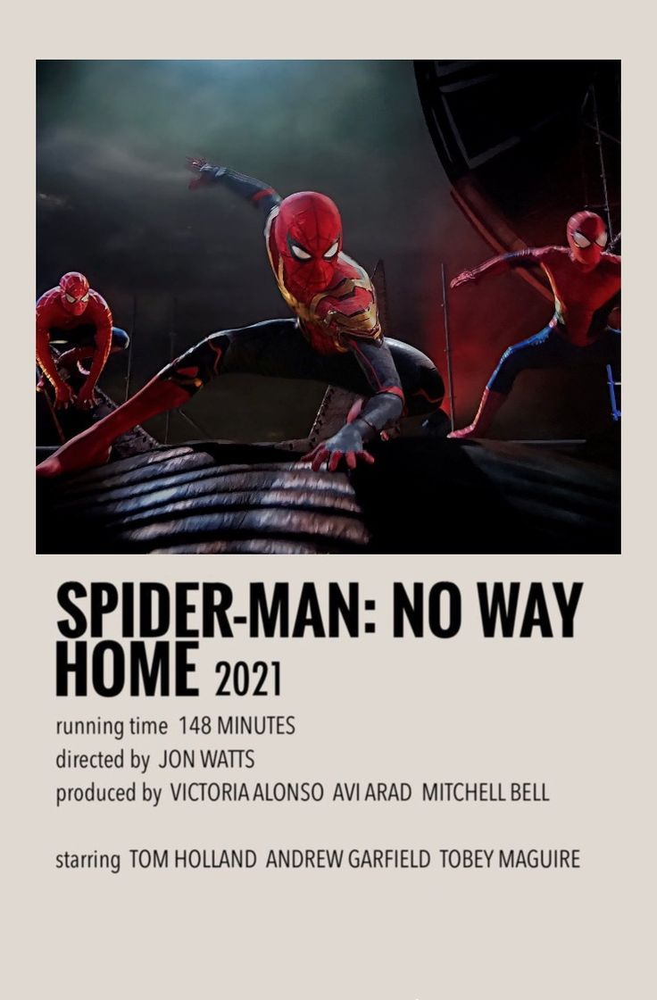
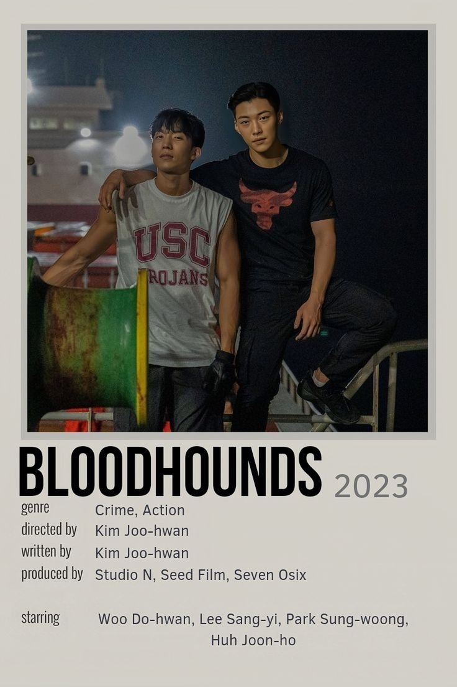
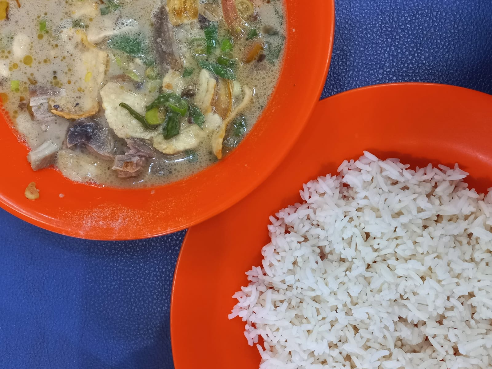
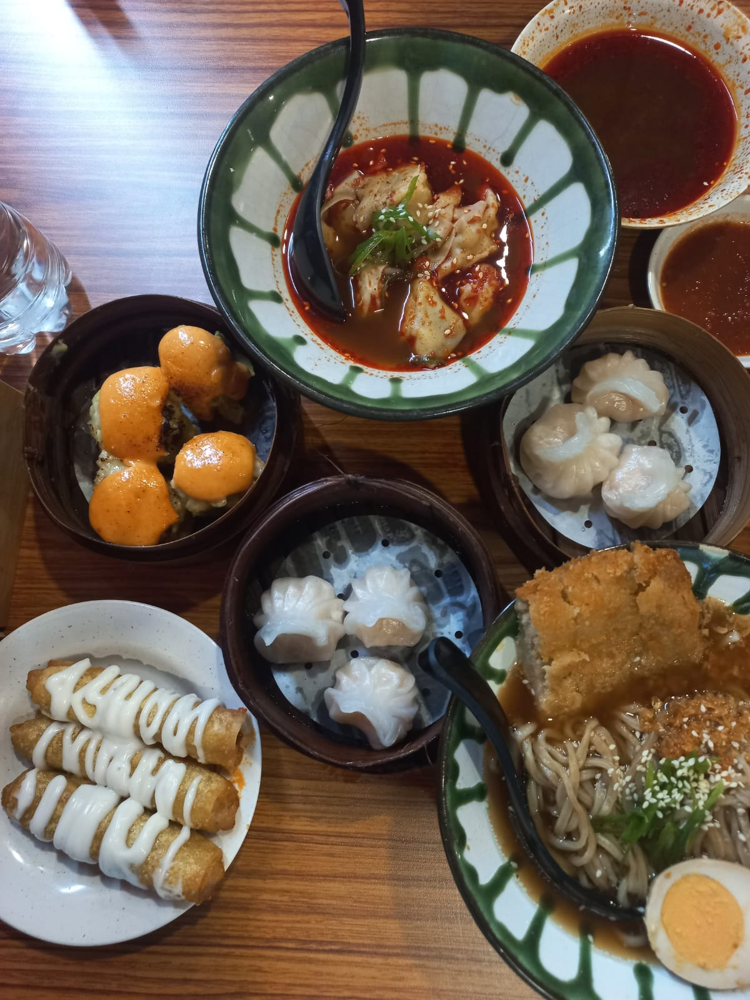

About Me
Halo! Saya Aulia Nurul Afiza, mahasiswi semester awal di Universitas Internasional Batam. Lahir di Batam, 11 Juni 2007. Saya sangat tertarik dengan teknologi dan analisis data.
My Personal Hobbies
✈️ Travelling
Menciptakan memori di setiap destinasi.



🎵 Musik
Melodi teman terbaik saat belajar.



🎬 Film/Series
Menikmati alur cerita inspiratif.



🍜 Kuliner
Menjelajahi cita rasa unik.



The Journey
| Tahun | Institusi | Ket |
|---|---|---|
| 2013-2019 | SDN 008 SEKUPANG | - |
| 2019-2022 | SMP IT NURUL MUHAJIRIN | - |
| 2022-2025 | SMAN 1 BATAM | IPS |
| 2025-Skrng | UIB | S1 Sistem Informasi |